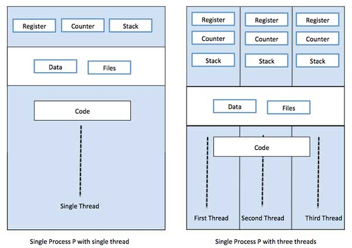

async() => { await }
by Joshua Nelson
This is a talk about websites
Most of the internet is websites!
 source: https://radar.cloudflare.com
source: https://radar.cloudflare.com
A brief, incomplete, and mostly wrong history of websites
- Computers were invented. This has made a lot of people very angry and has been widely regarded as a bad move.
- ARPANET nearly destroys humanity, as shown in the documentary War Games.
- Brandon Eich gets blackout drunk for a full week. When he wakes up he discovers he took Adderall and created JavaScript.
A brief, incomplete, and mostly wrong history of websites
- Computers were invented. This has made a lot of people very angry and has been widely regarded as a bad move.
- ARPANET nearly destroys humanity, as shown in the documentary War Games.
- Brandon Eich gets blackout drunk for a full week. When he wakes up he discovers he took Adderall and created JavaScript.
- Most of the internet is websites <== you are here
How do websites work?
A client sends HTTP requests to a server. Servers send a response back.

How do websites work?
Usually there are many clients.
How do big websites serve so many clients?
One of the services I work on at Cloudflare handles 300,000+ requests per second.
Serving one client at a time doesn't scale, no matter how fast the server is.
Solution: serve multiple clients at once.
Serving multiple clients at once: parallelism
Operating system threads run at the same time.
Digression: JS on the backend
JS is used a lot!
It would be nice to use it on the backend too.

Digression: JS on the backend
Problem: JS doesn't have threads
Digression: JS on the backend
Solution: concurrency using callbacks

Serving multiple clients at once: concurrency
In ~2010, async code looked like this ("callback hell")
fs.readdir(source, function (err, files) {
if (err) {
console.log('Error finding files: ' + err)
} else {
files.forEach(function (filename, fileIndex) {
console.log(filename)
gm(source + filename).size(function (err, values) {
if (err) {
console.log('Error identifying file size: ' + err)
} else {
console.log(filename + ' : ' + values)
aspect = (values.width / values.height)
widths.forEach(function (width, widthIndex) {
height = Math.round(width / aspect)
console.log('resizing ' + filename + 'to ' + height + 'x' + height)
this.resize(width, height).write(dest + 'w' + width + '_' + filename, function(err) {
if (err) console.log('Error writing file: ' + err)
})
}.bind(this))
}
})
})
}
})
Serving multiple clients at once: concurrency
Solution: async/await
try {
let files = await fs.readdir;
for (let filename of files) {
console.log(filename)
let values = await gm(source + filename).size()
console.log(filename + ' : ' + values)
aspect = (values.width / values.height)
widths.forEach(async function (width, widthIndex) {
height = Math.round(width / aspect)
console.log('resizing ' + filename + 'to ' + height + 'x' + height)
await this.resize(width, height).write(dest + 'w' + width + '_' + filename)
}.bind(this))
}
} catch(err) {
console.log('Error finding files: ' + err)
return;
}